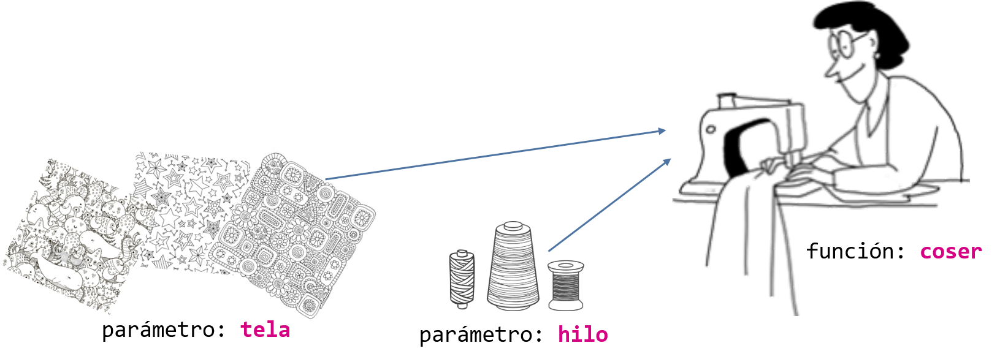

Una función es un conjunto de instrucciones que realizan unas determinadas tareas y a las que podemos invocar mediante su nombre.

function nombreFuncion([parameter1], [parameter2], ... [parameterN]) {
... instruccions...
[return valor;]
}
⚠️ Hay que tener mucho cuidado del lugar donde se declaran las variables. El código fuera de la función no ve las variables locales.
a. Función sin parámetros ni return.
...
<p><button onClick='saludar()>Clica aquí</button></p>
<script>
function saludar(){
alert("Hola mundo");
}
</script>
...
b. Función con parámetros y sin return.
...
<p><input id='nombre' type='text' placeholder='¿A quien quieres saludar?'></p>
<p><button onclick='main()>Clica aquí</button></p>
<script>
const NOMBRE = document.getElementById('nombre');
function saludar(persona){
alert(`Hola ${persona}`);
}
function main(){
saludar(NOMBRE.value);
saludar('Anita');
}
</script>
...
c. Función sin parámetros y con return.
...
<p><button onclick='obtenerAnnio()>Obtener año anterior</button></p>
<p id="resultado"></p>
<script>
const RESULTADO = document.getElementById('resultado');
function annioAnterior(){
let lastYear new Date().getFullYear()-1;
return lastYear;
}
function obtenerAnnio(){
RESULTADO.value = annioAnterior();
}
</script>
...
d. Función con parámetros y con return.
...
<script>
let a = 2;
let b = 4;
alert(multiplicar(a, b));
// 8
alert(multiplicar(a));
// 0
function multiplicar(num1 = 0, num2 = 0){
//num1 recibe a y num2 recibe b
//0 es el valor por defecto en caso de no enviar nada
let resultado = num1 * num2;
return resultado;
}
</script>
...
El código dentro de la función se ejecutará cuando "algo" invoque (llame) la función:
window.onload = funcion();